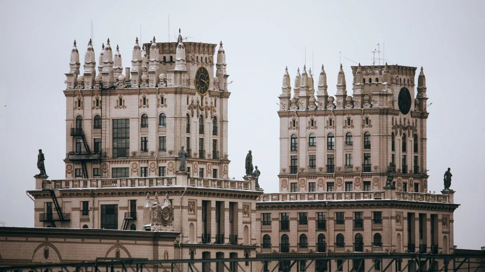
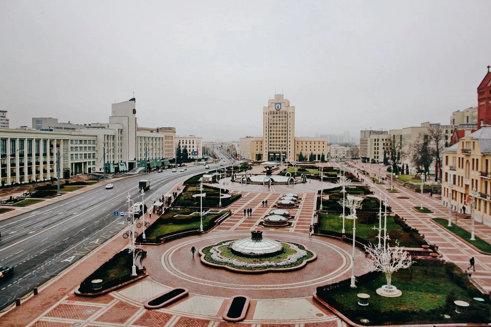
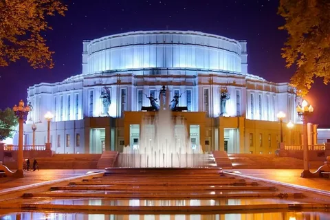

Что посмотреть в Минске: достопримечательности столицы Беларуси
Начать предлагаю с прогулки, полной отсылок к недавнему прошлому. Попробуйте любимые сладости детства в белорусском исполнении, полюбуйтесь архитектурой и посмотрите на десятки бюстов Ленина и Сталина в одной комнате. Чтобы не заблудиться, находите нужные места на карте и составляйте свой личный маршрут.
ВОРОТА МИНСКА
Первый архитектурный памятник советской эпохи встречает туристов прямо у выхода из вокзала. Две одиннадцатиэтажные башни в стиле сталинского ампира называют воротами Минска. Эти башни-близнецы примыкают к двум пятиэтажным домам. Внутри — обычные жилые квартиры. Если договоритесь с местными жителями, возможно, вам даже удастся зайти в подъезды.
ПЛОЩАДЬ НЕЗАВИСИМОСТИ
Эта площадь — центральная. Здесь расположены сразу несколько достопримечательностей, а под землёй — трёхэтажный торговый центр «Столица». В ТЦ можно купить одежду, обувь, украшения, сувениры и продукты как местных производителей (Milavitsa, Mark Formelle и других), так и заграничных брендов (Mango, Rieker и прочих). В углу площади Независимости «спрятано» самое большое здание Беларуси — Дом правительства. В здании 1770 окон и около 1000 кабинетов, сейчас здесь сосредоточено несколько органов власти. Этот архитектурный памятник эпохи конструктивизма построили в 30-е годы прошлого века. Экскаваторов и бульдозеров не было — котлованы рыли лопатами, землю вывозили на обычных телегах.
БОЛЬШОЙ ТЕАТР БЕЛАРУСИ
Если вы хотите провести вечер в Минске, прикоснувшись к театральной культуре страны, — сходите на балет, оперу или спектакль в Большой театр Беларуси. Это крупнейший театр страны, билеты в который порой довольно сложно достать. Здание Большого театра — образец советского довоенного конструктивизма. Этому стилю свойственны строгость, монолитность, геометричные формы. Театр возведён на Троицкой горе — самой высокой точке города.
Где обедать и ужинать
Cеть ресторанов «Васильки»
Это гастрономическая визитка Минска. Здесь вкусно кормят традиционными белорусскими блюдами (драниками, холодником, мачанкой) и не только. Цены невысокие, средний чек — 35–45 BYN, то есть около 1000–1300 ₽.
Современная белорусская кухня — Simple
Все блюда здесь готовят из местных продуктов и подают невероятно красиво. Средний чек — 50 BYN (1500 ₽).
«Нарисованная» кофейня — Keks Cafe
Место славится интерьером, который будто нарисовали чёрным маркером. За необычными фото для блога и вкусным кофе — сюда. Средний капучино (0,3) стоит здесь 3,5 BYN (105 ₽).
Бургерная — Enzo
Вкусные бургеры и завтраки целый день в современной части города. Цены средние, обед обойдётся вам примерно в 50 BYN (1500 ₽).